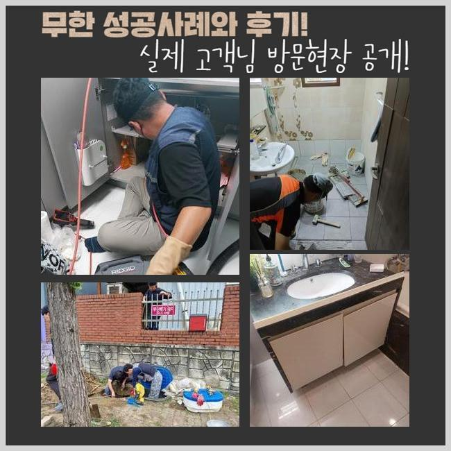
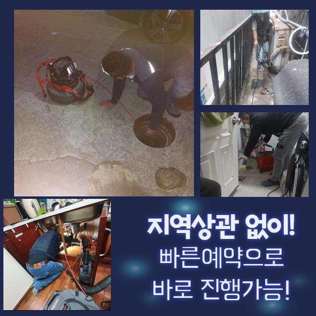
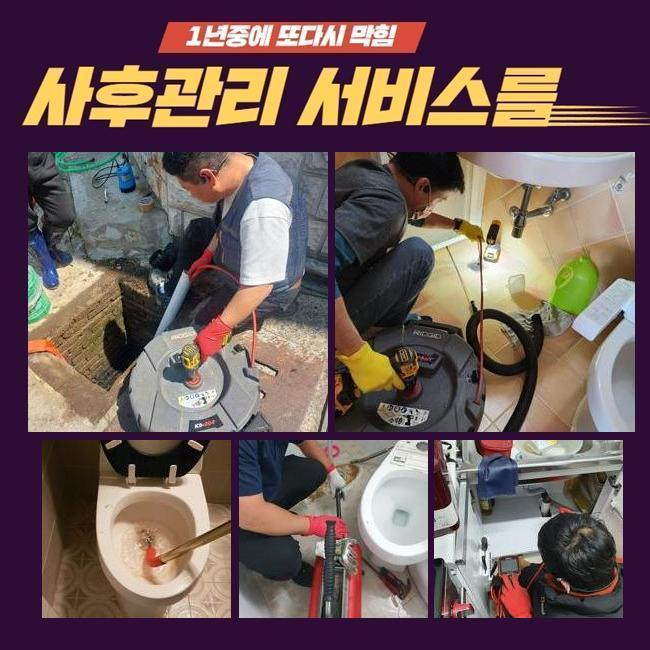
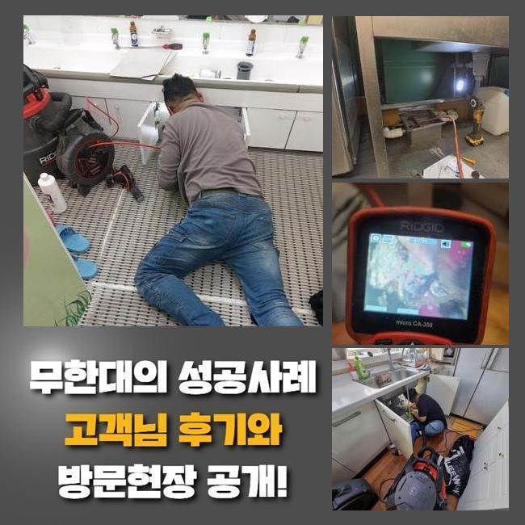
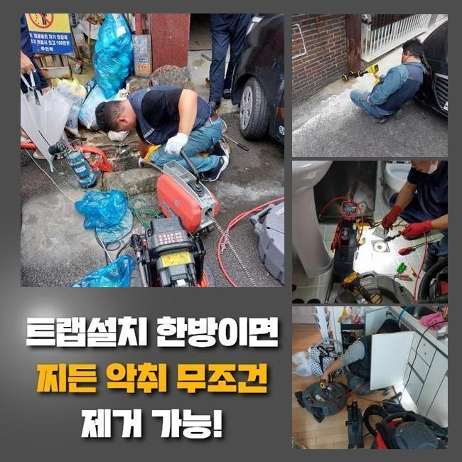
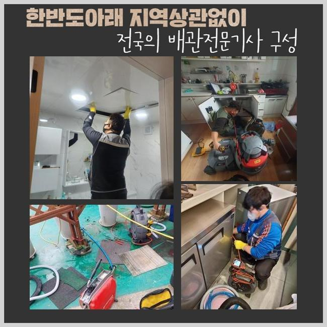

🏠 광주 장지동화장실하수구뚫음 초월읍 하수구뚫는곳 출장수리
광주 장지동 싱크대막힘 전문 시공 후기

📋 작업 개요
- 위치: 광주 장지동, 장지동, 광주
- 서비스 유형: 싱크대막힘, 하수구막힘, 배관막힘, 맨홀막힘, 역류해결, 뚫는업체, 배관청소, 배관보수
- 작업 일시: 2025. 1. 13. 10:11
- 업체명: 하수구수사대 (010-5615-2118)
🔍 문제 상황
광주 장지동화장실하수구뚫음 초월읍 하수구뚫는곳 출장수리
얼마 전 한 식당건물에서 하수구 시설의 막힘으로 당장 영업이 안 된다며 하시며 빠른 방문이 필요하다는 신청을 받고 다녀왔습니다
식당 건물이라면 하수구 설비가 고장나는 증세로 수돗물을 이용하지 못하는 상황이면 조리나 청소를 하지 못하니 한동안 문을 닫아야 할겁니다
하수구를 빠르게 뚫어줘야 고객님이 입을 악영향도 완화할 수 있으므로 해당공간에 빨리 방문해서 보수해드리기로 했어요
현장에 계셨던 고객님은 바닥부에 설치된 배수로에서 물 방출이 이뤄지지 않으며 실내가 아닌 실외의 하수구에서 역류까지도 빚어지는 사태라고 하셨습니다
고객님의 생활반경에 있는 바닥 배수구를 우선은 보고서 식당 바깥의 배관 역시 추가 처리를 해드려야 하니 간단하지만은 않은 작업과정이 필요할 듯 했네요
작업에 착수하기 이전에는 현재 처한 문제점들을 두루 조사해본 뒤에 이번 업무의 소요시간을 짐작해보고 알려드립니다
관로의 생김새가 독특하거나 여러곳들에 문제가 있다면 처리 시간이 더 들기에 시간이 더 필요할 때가 있습니다
바깥쪽의 하수시설 내부를 체크하고자 가봤더니 맨홀 겉면이 부식이 많이 되어있었고 맨홀 옆의 바닥도 물기가 흡수되어 정돈되지 않은 상태였습니다
시설면에서의 하자가 나타나지 않도록 신중을 기하며 시공을 끝내드리겠다고 약속드리고 착수하게 됐습니다

🔎 원인 분석
💡 전문가 진단: 정밀 진단 장비를 사용하여 슬러지의 고착 여부를 판명하고 타격/세척 작업을 실시했습니다.
그리 세세하게 보지 않아도 이물질들이 제법 많더라고요
번들대는 유분기가 덕지덕지 붙고 떠다니는 걸 한눈에 담을 수 있을 정도로 오염이 심해서 초반부의 정리작업을 시행해야 할 것 같았네요
처음에는 주방 설비부터 작업에 들어간 다음 관로를 보여주는 내시경 기기를 배치하여 아래 상황을 판단해요
건물의 파이프라인이 어떤 식으로 결합되어 있는지 확인을 해준 이후에는 고압수를 쏴서 강력하게 흡착되어 있는 기름때를 공격해야겠다고 단계를 구상했습니다
이 상태로는 내시경을 진입시켜도 현황을 체크할 수 없을 것 같아서 잔수를 제거하는 석션 가동을 실시해주었습니다
석션장치는 일반 청소기처럼 진공 방식으로 동작하는데 혼탁하게 오염된 하수와 찌꺼기를 남김 없이 바깥으로 투출되도록 하는 원리로 동작됩니다
흡입력이 상당한 편이라 묽은 물질이라면 빠르게 기다란 석션 속으로 모이게 됩니다
찐득찐득한 제형이라거나 벽과 한몸처럼 말라붙은 오물은 삭제시키기 힘들어서 석션만 돌려서는 하수관을 맑게 만들 수 있는 현장들이 많지않은 것이 사실입니다
하지만 처음과 마무리에 누락하지 않고 석션 장치를 적용하고 있는 등 배수로의 정비를 성공으로 이끌기 위해서는 반드시 최소 한번은 작업 중에 쓴답니다
석션을 돌려서 배관 통로를 쾌적하게 조성해두고서 관찰 카메라를 주입시켰습니다
이 카메라의 기능으로는 얽혀있는 형상으로 길고 너비가 넓은 관로라도 이곳저곳 관찰하면서 막힌 쪽과 하수관의 컨디션에 대해서 단서를 찾아낼 수 있습니다

🔧 작업 과정
이번 현장을 들여다보니 끈적한 점성이 있는 유분과 유분막이 많이 관찰됐습니다
쉽게 없어지지 않는 슬러지가 식당 내부 배수구 장애의 주범일 것 같다는 추정이 됐습니다
조리하다가 바닥 배관으로 빠져나간 기름기가 통로 지름에 맞게 자라났고 그리하여 밖으로 빠져나갈 틈이 없다보니 잔수가 자꾸만 고이면서 역행을 하게 된겁니다
내부배관을 석션기로 정리를 해주면서 하수의 종착지인 야외 쪽의 하수구도 보완을 해드려야 했는데요
플렉스 샤프트는 유연한 몸체를 지녔고 예리한 금속의 헤드가 달려있는 모양입니다
석션기로는 수습이 안되는 크기가 큰 침전물이나 장기간 변성된 채 머무르고 있는 고착물을 긁어내거나 잘게 쪼갤 수 있어요
앞서 사용한 샤프트와 석션 내부관찰용 카메라까지 빠짐없이 작동시켜야만 뚫음 청소가 만족스럽게 끝나며 꿈쩍도 하지 않는 배관의 통로도 다시 나오게 됩니다
맡아야 할 배관이 고착된 찌꺼기가 많아서 높은 수압으로 청소하는 방식도 적용해야 할 듯 싶더라고요
샤프트 석션으로 내부정화를 한 덕에 물길이 제법 좋아졌다는 걸 체감하고 다음으로 고압청소기를 세팅해하여 속시원하게 청소해 나갔습니다
강력하게 출수되는 물을 정확한 포인트로 이동시켜주는 노즐을 조절해서 이물질의 밀집도가 높은 구간을 집중타격했습니다
이 작업으로 가득 차올라서 부피감이 상당했었던 슬러지를 흔적없이 삭제시켰어요
청소기기를 돌리기 전에 내시경으로 고장난 배관의 원인과 현황을 밑바탕으로 깔아두고 다양한 스킬을 통한 배관청소를 하수구에 고여있던 물과 찌꺼기들을 전반적으로 없애는 과제에 당당하게 성공하게 됐어요
시공 단계를 끝내면서 청소된 내측을 봐줬는데 통로도 훤하게 트이고 여기저기 부착되어있던 침전물이 마법처럼 사라졌으며 벽면에 있던 기름때들도 떨어져나가서 선명하게 원형 구조가 보이는 걸 관측할 수 있게 됐어요
배수로 안에 뿌옇게 고정되어있던 하수도 싹 내려갔으며 입자가 작은 유해한 물질들이 없어졌습니다
아무래도 식음료를 파는 곳이면는 식용유를 사용하는 양도 매우 많기 때문에 아무래도 막힘이 생길 일이 더 많기도 합니다
잘게 썰린 음식물이나 꾸덕한 기름기가 배관 속에 유입되지 않도록 싱크대를 쓸 때는 조심해주셔야 할 부분이 있습니다
마감 단계에 이르렀다면 하수의 유속을 보며 시공이 결함없이 처리되었는지 검사를 해보게 되는데요


✅ 작업 완료
부엌에서 일부러 물을 모아서 폐기하면서 깨끗하게 닦아낸 야외관로까지 막히는 기색 없이 배출이 시원하게 되는지 체크해주는 작업입니다
쏟아부었던 물기가 시원하게 이동하는 걸 보이니 비로소 마감해도 될 듯 했어요
꽉 막힌 하수구를 회복시키고 곳곳의 검사를 마쳤다면 자리를 뜨게 됐습니다
하수의 처리가 적절하지 못할 때는 쉽게 해결되지 않을까하는 기대로 자가처리를 해보시려다 배관이 더 다칠 수 있습니다
전문적인 조치가 필요하시면 계신 곳으로 빠르게 가서 막힘이 생겨난 이유들을 다 제거해드리니 전문적 조치를 받아보시기 바랍니다!



⚠️ 주방 싱크대 배관 막힘 예방 수칙
- ✅ 기름기가 묻은 식기나 프라이팬은 설거지 전 키친타올로 반드시 기름때를 닦아내세요.
- ✅ 주기적으로 싱크대 개수대에 뜨거운 물을 가득 받아 한 번에 내려 배관 내부 기름을 씻어내세요.
- ✅ 배수구 거름망을 미세한 필터로 사용하시고 음식물 찌꺼기가 틈으로 새어 들지 않게 관리하세요.
- ✅ 베이킹소다와 식초를 뜨거운 물과 함께 일주일에 한 번씩 부어주면 배관 살균과 막힘 예방에 좋습니다.
💡 핵심 정리
- 확실한 장비 작업(내시경 점검 및 샤프트 스케일링)으로 원인을 뿌리 뽑습니다.
- 작업 후 1년 이내에 동일한 부위 재발 시 100% 무상 A/S 서비스를 보장합니다.
- 서울 · 경기 · 인천 전 지역에 24시간 언제든 긴급 출동할 수 있도록 항시 대기 중입니다.
❓ 자주 묻는 질문 (FAQ)
🚨 광주 장지동 싱크대막힘 문제로 고민이신가요?
정확한 원인 진단과 확실한 시공으로 재발 없는 해결을 약속드립니다.
24시간 긴급 출동 | 서울 · 경기 · 인천 전지역 | 1년 내 재발 시 무상 A/S